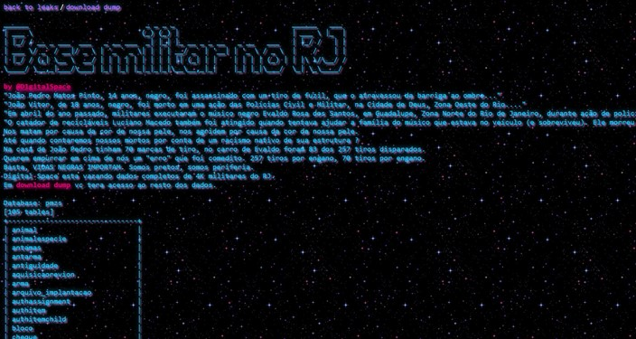

Um grupo de hackers denominado DigitalSpace vazou dados de quatro mil militares do Rio de Janeiro. A exposição é um protesto contra a morte do menino João Pedro Mattos Pinto, de 14 anos. O adolescente foi baleado dentro da própria casa, durante uma operação policial. As informações foram divulgadas durante as investigações contra os policiais que participaram da ação.
Entre os dados vazados pelo grupo, estão informações pessoais de oficiais do Exército Brasileiro e policiais militares no Rio de Janeiro, como CPF, nome completo e e-mail. Há pouco menos de um mês, o DigitalSpace também expôs informações sobre exames de Jair Bolsonaro (sem partido). Na ocasião, os hackers questionavam a ausência do exame de Covid-19 do presidente na base de dados do Hospital das Forças Armadas, enquanto outros exames mais antigos estavam cadastrados no sistema e sem o uso de pseudônimos.
Na divulgação no Twitter, o grupo usou a hashtag #BlackLivesMatter (ou #VidasNegrasImportam, em português). A campanha nasceu nos Estados Unidos, contra a violência policial sofrida pela população negra, e mobilizou pessoas em todo o mundo. "Como explicar para uma criança que a segurança dá medo?", questionou na publicação.
Após o vazamento, a rede social suspendeu a conta poucas horas depois. Segundo o grupo, os dados foram obtidos por meio de uma vulnerabilidade no site da Polícia Militar do estado. Em comunicado, o Exército Brasileiro afirmou que tem ciência do vazamento e está investigando suas causas e os potenciais impactos causados nas Forças Armadas. "Foram adotadas providências imediatas para mitigar eventuais consequências. Fruto das conclusões da investigação, serão desenvolvidas as ações técnicas e legais necessárias", escreveu o Exército. A PM ainda não se pronunciou sobre o caso.